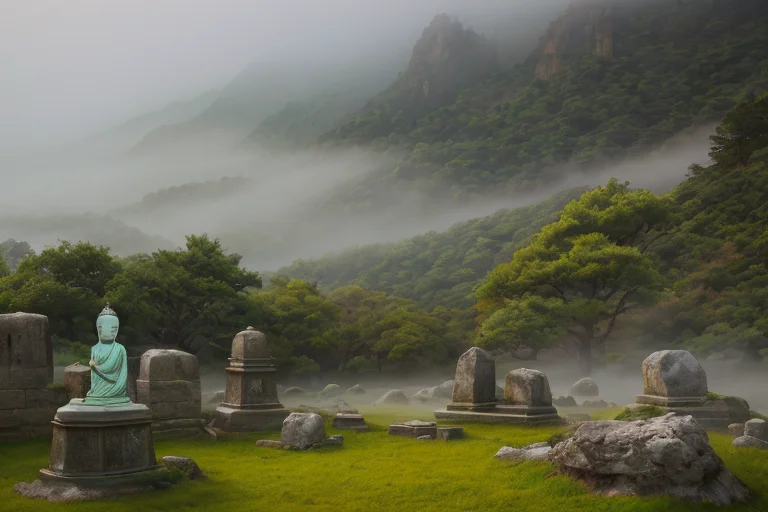

第一章 現実の大分
あなたはまだ気づいていない。この土地にも、王がいることを。
国東半島の山懐に抱かれた宇佐神宮は、朝もやに包まれていた。全国四万社を超える八幡宮の総本宮。その参道の静けさは、訪れる者の足音さえ吸い込む。祈りが積み重なった時間だけが、石畳の上をゆっくりと流れている。ここは歪みの列島の中でも、特に精神性の高い「静律線」が通る地だ。人々は現実の苦しみや悲しみを抱え、この静寂に身を委ねる。湯けむりが立ち昇る別府の街を見下ろす高台から、ある存在がその様子を静かに見つめていた。白と薄青の光を微かにたたえた、湯煙のような輪郭を持つ王。オオイタリア・ミストである。彼の目には、温泉に浸かり疲れを癒そうとする人々、石仏の前に手を合わせる人々の姿が映る。癒しを求めるその行為は、現実からの逃避なのか。それとも、再び立ち上がるための再生の儀式なのか。王は未だ答えを持たない。ただ、この地に満ちる濃密な感情の波を、そっと受け止めていた。
第二章「歪みの兆候」
臼杵石仏の前に立つ老婆の祈りは、いつもより微かに震えていた。彼女の息子は、くじゅう連山の麓で暮らす。先日の大雨で土砂崩れの危険が伝えられ、不安が彼女の心を蝕んでいた。祈りは、安らぎを求める切実な願いであり、同時に、眼前の現実から一時的に目を背ける行為でもあった。その祈りのエネルギーは、この地域の感情の流れに、かすかな「歪み」を生じさせていた。
湯王オオイタリア・ミストは、国東半島の静寂の中に立ち、その揺らぎを感知する。妖精ユフリアが伝える温泉脈の微細な乱れは、地盤のストレスそのものではなく、人々の心の緊張が地の精霊に与える影響だった。癒しを求める祈りが、かえって不安を増幅させる逆説。王は白と薄青の光を静かに拡げ、ユフリアが調整する温泉の波動で、その感情の荒波を和らげようとする。完全な鎮静はできない。彼にできるのは、崩壊の一歩手前で踏みとどまる、ほんの少しの「間」を創ることだけだ。

第三章 王の葛藤
臼杵石仏の苔むした岩肌に、朝露が伝う。王はその前に立ち、無数の祈りの痕跡を感じていた。癒しを求める声は、確かにここに集う。しかし、その願いの多くは、痛みからの一時的な逃避ではなかったか。湯煙に身を委ね、現実を曖昧にすること。それは再生への一歩か、それともただの停滞か。
彼は自らの光輪を見つめた。白と薄青の光は、包容そのものだった。人々の疲れを吸い取り、安らぎを与える。しかし、その行為が、現実と向き合う力を奪ってはいないか。癒しの名の下に、困難から目を逸らさせてはいないか。彼は感情を持たぬ存在として設計された。それゆえに、この問いは重い。安堵という感情は、時に思考を停止させる甘い霧でもある。
くじゅう連山を望む静寂の中で、王は決意した。癒しは、逃げ場を提供するだけではない。霧の中で立ち止まり、己と対話する「間」を与えることだ。湯煙は現実を消さない。ただ、向き合うための温もりを纏わせる。彼の光は、逃避を許容しつつ、その先の一歩を、ほのかに照らし出すためのものだと。
第四章 妖精との対話
臼杵石仏の谷間、苔むした岩肌から微かな湯気が立ち上っていた。ユフリアは、石仏の前に跪く老婆の肩に、見えない温もりをそっと纏わせた。
「祈りとは、魂の湯船に浸かるようなものだと思います」と、ミスティアが湯煙の中から囁いた。「熱すぎず、冷たすぎず。ただ、その人の重みを支えるだけの浮力を与える。私たちの役目はそれです」
王は静かに聞いた。彼女たちは、癒しが逃避ではないことを知っていた。由布院の湯に浸かる人々は、現実から逃げているのではない。湯気の向こうに、かすみがちだった明日の輪郭を、少しだけ鮮明に見つめ直している。だんご汁の温もりが胃に広がる時、人は初めて、空腹以外の「渇き」に気付くことがある。
「再生は、突然の奇跡ではない」とユフリアが言った。「国東半島の六郷満山のごとく、小さな祈りの積み重ね。その一つひとつが、心の地盤を、ゆっくりと安定させていくのです」
湯煙はすべてを解決しない。ただ、涙も汗も、すべてを等しく温かい霧で包み、少しだけ優しく見せる。それが、この王国の祈りの形だった。
第五章 微調整と余韻
臼杵石仏の前に立つ者は、岩肌に刻まれた無数の祈りに、時間の厚みを感じる。風化し、苔むした表情は、災いも平穏も等しく飲み込み、静かな余白だけを残している。オオイタリア・ミストは、その前に佇み、掌をかざした。指先から立ち昇るのは、湯煙よりもさらに微細な、精神の波長を整える光の粒子だ。
彼は巨大な災害を止められない。しかし、くじゅう連山の稜線に沿って流れる地磁気の乱れを、ほんの少し滑らかに整えることができる。地震の前触れとなる地中の軋みが、人々の無意識に届く「予感」という形で表出する時、その予感に付随する漠然とした恐怖を、安堵の色合いに僅かに染め分ける。津波の速度を遅らせることはできないが、波が陸に到達するまでの、ほんの数秒の「隙間」に、逃げ遅れた子供の足を速める偶然を織り込む。
癒しは逃避ではない。湯に身を委ね、一時的に現実から離れるその行為そのものが、壊れたものを直すのではなく、直す力を内側から取り戻すための、静かな再生の儀式なのだ。ミスティアが湯煙を揺らし、ユフリアが湯の波紋を安定させる。すべては、この地が長く培ってきた「受容」の形。
湯けむりの向こうで、かぼすの小片が湯豆腐の上に落ちる。鋭い酸味は、優しい甘みを引き立てるための、必要な対比だ。
あなたの町にも、王がいる。